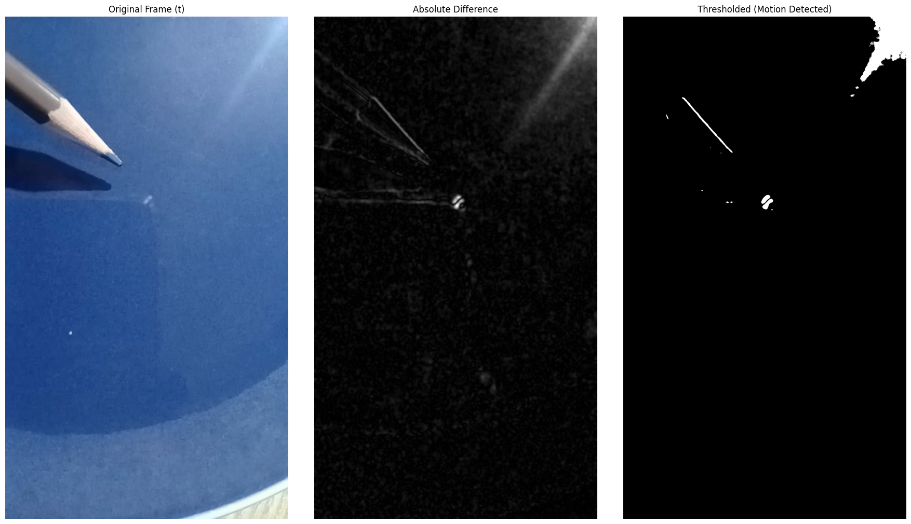
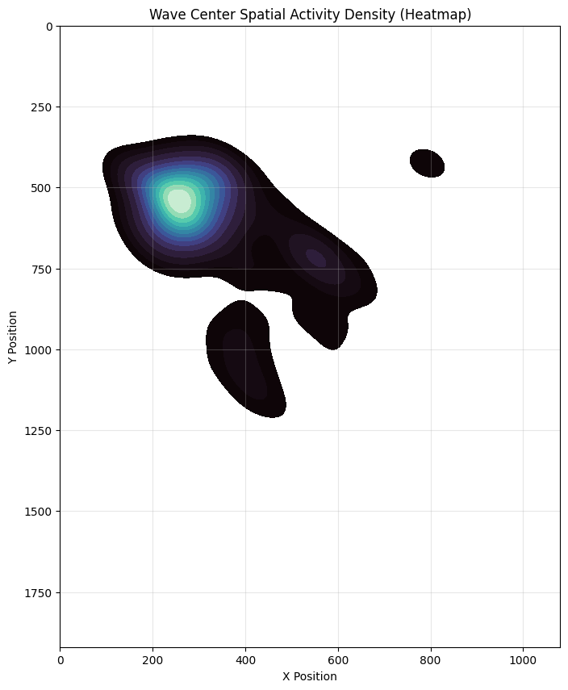
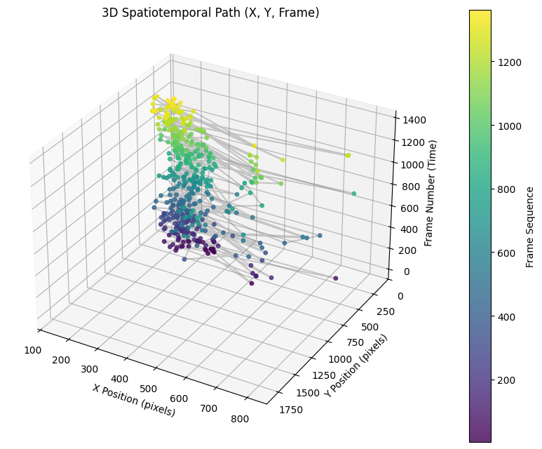
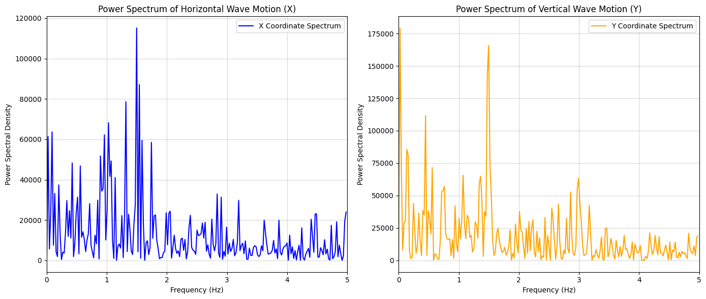

เปลี่ยนคลิปวิดีโอเป็นแล็บฟิสิกส์: วิเคราะห์การแผ่และคาบของคลื่นน้ำด้วย Python บน Google Colab

1. ทำไมวิธีนี้ถึงเปลี่ยนห้องเรียนฟิสิกส์ได้จริง?
ในการเรียนฟิสิกส์เรื่อง คลื่นผิวน้ำ (Water Waves) ปัญหาสำคัญที่ครูและนักเรียนพบเจอคือ คลื่นแผ่ตัวเร็วและจางหายไปในเวลาอันสั้น การใช้สายตานับคาบเวลาหรือใช้ไม้บรรทัดวัดหน้าคลื่นจึงเกิดความคลาดเคลื่อน (Human Error) สูงมาก จนนักเรียนหลายคนรู้สึกว่าฟิสิกส์เป็นเพียงการท่องจำสูตร $v = f\lambda$
แต่เมื่อเรานำ Computer Vision + Python มาช่วยประมวลผล เราสามารถเปลี่ยนวิดีโอ 30 เฟรมต่อวินาที ให้กลายเป็นข้อมูลพิกัด $(x, y, t)$ ระดับมิลลิวินาที ทำให้นักเรียนเห็นการเคลื่อนที่ของระลอกคลื่นแบบละเอียด ได้ทั้งความเร็วและคาบเวลาที่คำนวณและตรวจสอบได้จริง
2. ภาพกราฟสำคัญ: ข้อมูลกำลังบอกอะไรเราในระดับฟิสิกส์ ม.ปลาย?
ตรวจจับระลอกคลื่นด้วยความต่างของเฟรม (Frame Differencing)

หลักการทำงาน: เปรียบเทียบความสว่างระหว่างสองเฟรมติดกัน เมื่อผิวน้ำกระเพื่อม พิกเซลที่มีการเปลี่ยนแปลงจะสว่างขึ้น ทำให้คอมพิวเตอร์คำนวณหาจุดศูนย์กลางมวล (Centroid) ของแนวระลอกคลื่นได้โดยอัตโนมัติถึง 448 จุดพิกัด ตลอดทั้งคลิป
แผนที่ความหนาแน่นของการกระเพื่อม (Wave Activity Heatmap)

มองเห็นการถ่ายโอนพลังงานแบบ 2 มิติ: ในวิชาฟิสิกส์ คลื่นคือ "การถ่ายโอนพลังงานผ่านตัวกลางโดยอนุภาคไม่ได้เคลื่อนที่ไปตามคลื่น" แผนที่ความร้อน (Heatmap) นี้คำนวณจากความหนาแน่นการกระจายตัว (Kernel Density Estimation) ทำให้นักเรียนเห็นอย่างชัดเจนว่า บริเวณสีสว่างโทนร้อน (Hotspot) คือศูนย์กลางแหล่งกำเนิดคลื่น ที่มีการกระเพื่อมของพลังงานซ้ำๆ บ่อยที่สุด และค่อยๆ แผ่กระจายจางลงไปรอบนอก
แผนที่การเคลื่อนที่ 3 มิติ (3D Space-Time Trajectory)

วิวัฒนาการตามเวลา: แกนดิ่งคือเวลา ($t$) และระนาบฐานคือพิกัดพิกเซล $(X, Y)$ แสดงให้เห็นริ้วคลื่นที่แผ่ออกเป็นเกลียวตามเวลาอย่างมีระเบียบ โดยมีอัตราเร็วเฉลี่ยของการแผ่ตัวอยู่ที่ 45.99 พิกเซล/เฟรม (หรือประมาณ 1,380.7 พิกเซล/วินาที)
ถอดรหัสความถี่และคาบของคลื่นด้วย FFT

ถอดรหัสความถี่เด่น (Dominant Frequency): เมื่อแปลงสัญญาณพิกัดด้วย Fast Fourier Transform สัญญาณพิกัดแกน $X$ ปรากฏยอดสเปกตรัมพลังงานสูงสุดชัดเจนที่:
*ผลลัพธ์นี้ช่วยให้นักเรียนได้ค่าความถี่และคาบเวลาที่แม่นยำทางคณิตศาสตร์ ลดความคลาดเคลื่อนจากการใช้สายตานับหรือกดนาฬิกาจับเวลา
3. แนวทางจัดกิจกรรมในชั้นเรียน (3 ขั้นตอนง่ายๆ)
ครูผู้สอนสามารถนำแนวทางนี้ไปจัดเป็น กิจกรรมการเรียนรู้แบบสืบเสาะ (Inquiry-based Lab) ความยาว 1 คาบ (50 นาที) ได้อย่างกระชับ:
ถ่ายคลิปในห้องเรียน
ใส่น้ำในถาดหรือกะละมัง วางเหรียญหรือไม้บรรทัดเทียบสเกล ถ่ายคลิปมุมตรงด้านบนขณะหยดน้ำ 10–20 วินาที ด้วยสมาร์ตโฟน
รันผลบน Google Colab
อัปโหลดคลิปขึ้น Colab แล้วกดรันโค้ด นักเรียนจะได้กราฟพิกัด อัตราเร็ว และสเปกตรัมความถี่ออกมาทันที
ตั้งคำถามสืบเสาะ
ชวนนักเรียนวิเคราะห์: ถ้าน้ำลึกขึ้นหรือหยดน้ำถี่ขึ้น กราฟ FFT และความเร็วคลื่นจะเปลี่ยนไปอย่างไร?
💬 ตัวอย่างประเด็นชวนคุยในชั้นเรียน (Inquiry Prompts):
- ศูนย์กลางพลังงาน (จาก Heatmap): ให้นักเรียนสังเกตจุดสีสว่างบน Heatmap เทียบกับตำแหน่งจริงที่หยดน้ำลงไป จุดศูนย์กลางการถ่ายโอนพลังงานอยู่ที่พิกัดใด และรูปทรงการกระจายตัวสมมาตรหรือไม่ เพราะเหตุใด?
- การแปลงสเกล: ถ้ารู้ว่าความกว้างของถาดน้ำ 30 ซม. เท่ากับ 1,080 พิกเซล เราจะแปลงความเร็วจาก px/s ให้เป็น m/s ได้เท่าใด?
- ธรรมชาติของความถี่: ทำไมกราฟ FFT ถึงชี้ชัดว่าความถี่หลักคือ 1.50 Hz? ตัวเลขนี้สัมพันธ์กับจังหวะการหยดน้ำอย่างไร?
- การสังเกตเชิงลึก: ทำไมตำแหน่งแกน Y ถึงมีแนวโน้มเคลื่อนที่อย่างช้าๆ (Drift) ตลอดทั้งคลิป? น้ำในถาดมีความลาดเอียงหรือกระแสไหลหรือไม่?
4. บทสรุป: สู่การเรียนรู้วิทยาศาสตร์เชิงข้อมูล
การนำ Python และ Google Colab มาช่วยทดลองฟิสิกส์ ไม่ใช่เรื่องซับซ้อนเกินไปสำหรับนักเรียน แต่เป็นสะพานเชื่อมระหว่าง การสังเกตธรรมชาติ กับ วิทยาการข้อมูล (Data Science) ช่วยเปลี่ยนการเรียนรู้แบบเดิมให้เป็นการลงมือปฏิบัติจริง และมองเห็นคณิตศาสตร์ที่ซ่อนอยู่ในการกระเพื่อมของสายน้ำได้อย่างชัดเจน
พร้อมนำไปใช้ในห้องเรียนหรือยัง?
เปิดสมุดบันทึก Google Colab ต้นฉบับเพื่อทดลองใช้งานหรือปรับแต่งโค้ดได้ทันที
ดร.อภิสิทธิ์ ธงไชย
นักวิชาการและนักการศึกษาอิสระ มุ่งมั่นพัฒนาการเรียนการสอนสะเต็มศึกษา วิทยาการคำนวณ และการประยุกต์ใช้ AI ในการเรียนรู้